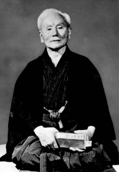
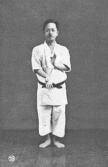

Wado-ryu
Wadō-ryū (和道流) is one of the four major karate styles and was founded by Hironori Ōtsuka (1892–1982). The style itself places emphasis on not only striking, but tai sabaki, joint locks and throws. It has its origins within Tomari-te karate, but was also influenced by Shito-Ryu and Shotokan; and was also influenced by Jujutsu.

Shotokan
Shotokan (松濤館, Shōtōkan) is a style of karate, developed from various martial arts by Gichin Funakoshi (1868–1957) and his son Gigo (Yoshitaka) Funakoshi (1906–1945). Shotokan is regarded as a dynamic martial art as it develops anaerobic, powerful techniques as well as developing speed.
Goju-ryu
Gōjū-ryū (剛柔流), Japanese for "hard-soft style", is one of the main traditional Okinawan styles of karate, featuring a combination of hard and soft techniques. Gōjū-ryū incorporates both circular and linear movements into its curriculum, combining hard striking attacks such as kicks and close hand punches with softer open hand circular techniques for attacking, blocking, and controlling the opponent, including joint locks, grappling, takedowns, and throws.

Shito-ryu
Shitō-ryū (糸東流) is a form of karate that was founded in 1934 by Kenwa Mabuni (摩文仁 賢和, Mabuni Kenwa). Shitō-ryū is synthesis of the Okinawan Shuri-te and Naha-te schools of karate and today is considered one of the four main styles of the art.[1]
